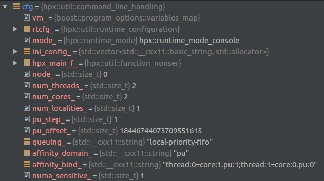
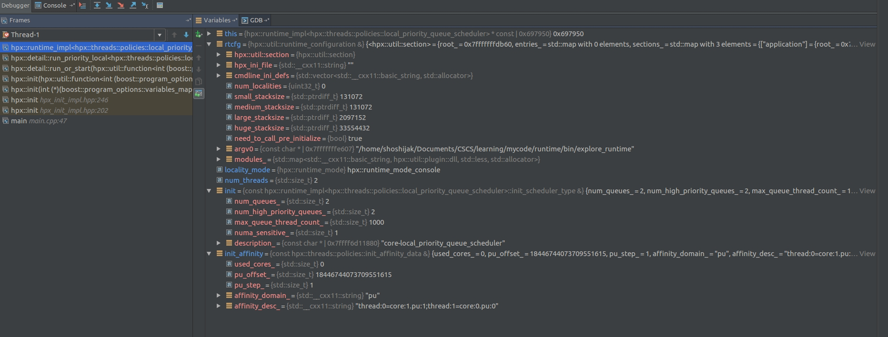

See Also: return detail::run_or_start(
f,
desc_cmdline,
argc, argv,
hpx_startup::user_main_config(cfg),
std::move(startup),
std::move(shutdown),
mode, true);
See Also: inline int init(
util::function_nonser<
int(boost::program_options::variables_map& vm)
> const& f,
boost::program_options::options_description const& desc_cmdline,
int argc,
char** argv,
std::vector<std::string> const& cfg,
startup_function_type startup,
shutdown_function_type shutdown,
hpx::runtime_mode mode)
See Also: struct hpx::util::command_line_handling
See Also: int call(
boost::program_options::options_description const& desc_cmdline,
int argc, char** argv);


See Also: int run_or_start(
bool blocking,
std::unique_ptr<hpx::runtime> rt,
util::command_line_handling& cfg,
startup_function_type startup,
shutdown_function_type shutdown)
See Also: return run_or_start(
blocking,
std::move(rt),
cfg,
std::move(startup),
std::move(shutdown));
See Also: instanciate commandline_handling instance
cfg
See Also: void handle_attach_debugger(); (calls 1), bool handle_arguments(
util::manage_config& cfgmap,
boost::program_options::variables_map& vm,
std::vector<std::string>& ini_config,
std::size_t& node,
bool initial = false); (calls 2), void store_command_line(int argc, char** argv); (calls 3), void store_unregistered_options(std::string const& cmd_name, (calls 4), bool handle_help_options(
boost::program_options::options_description const& help); (calls 5), result=cfg.call(desc_cmdline, argc, argv)
See Also: int call(
boost::program_options::options_description const& desc_cmdline,
int argc, char** argv); (calls 2)
See Also: int call(
boost::program_options::options_description const& desc_cmdline,
int argc, char** argv); (calls 3)
See Also: int call(
boost::program_options::options_description const& desc_cmdline,
int argc, char** argv); (calls 4)
See Also: int call(
boost::program_options::options_description const& desc_cmdline,
int argc, char** argv); (calls 5)
See Also: int call(
boost::program_options::options_description const& desc_cmdline,
int argc, char** argv); (calls 1)
 .jpg)